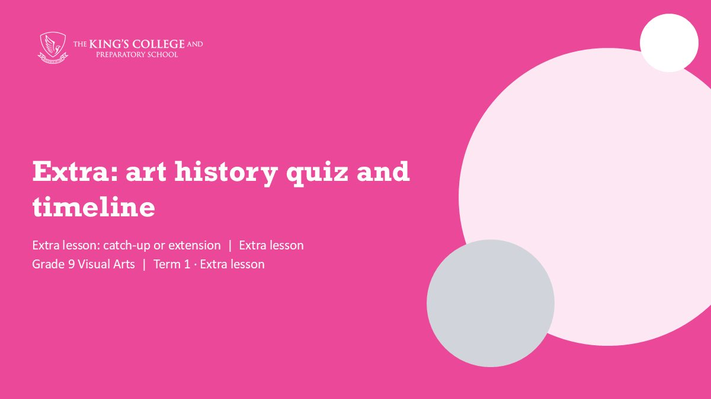

Term 1 · Extra lesson · Extra lesson: catch-up
Extra: art history quiz and timeline
Start here
Today I will
- Test my knowledge of the art history timeline
- Fix gaps in my timeline
- Revise Term 1 vocabulary
Think first
Without looking: which came first, Cubism or Romanticism?
Words to know
- Renaissance
- About 1400–1600: rebirth of Greek and Roman ideas, perspective and anatomy.
- Baroque
- Drama, movement and strong light and dark.
- Post-Impressionism
- Structure, symbols or emotion added to Impressionism (Van Gogh).
- Social realism
- Realistic art showing the hard lives of ordinary people.
- Resistance art
- Art made to oppose an unjust system such as apartheid.
Slides

Notes
Timeline quiz and vocabulary; finish the timeline.
Memory tricks for the timeline
- Chunks: Old masters (Renaissance to Realism), then modern (Impressionism to Pop), then contemporary.
- One image each: Remember one famous artwork per movement.
- Reactions: Each movement answers the one before it.
- South Africa: 1948–1994: art as a voice during apartheid.
Remember
One image, three keywords, right order.
Practical
You need: Quiz sheet, timeline, vocabulary booklet
Quiz and timeline completion
- Write the timeline quiz (15 minutes, no notes).
- Swap with a partner and mark with the answers on the board.
- Add anything missing to your timeline: dates, a thumbnail and three keywords per movement.
- Highlight five vocabulary words you are still unsure of and learn them from the booklet.
Test yourself
- Put in order: Surrealism, Impressionism, Pop Art.
- What is chiaroscuro?
- Which movement was Gerard Sekoto's work linked to?
Show answers
1. Impressionism, Surrealism, Pop Art. 2. Strong contrast between light and dark to make forms 3D and dramatic. 3. Social realism (also called township art, a label many artists disliked).